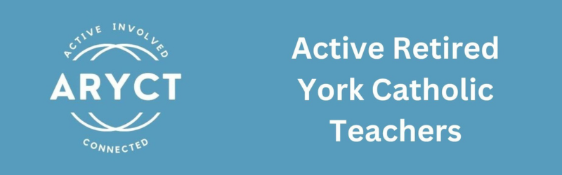
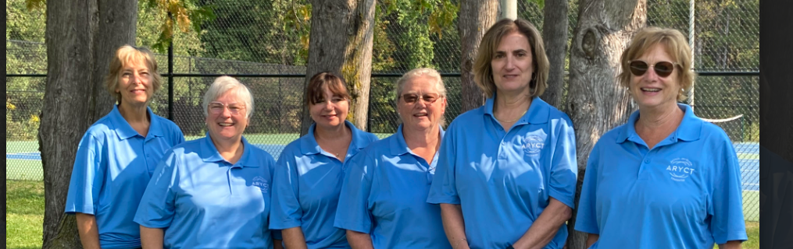

ARYCT (Active Retired York Catholic Teachers) is a community of retirees from the York Catholic District School Board who get together throughout the year to stay connected, active, and involved. We meet for guest speakers, outings, lunches and hands-on activities like our milk bag weavers group.
We're also proud to give back. Through member donations and fundraising, ARYCT has supported organizations like City Street Outreach, St. Vincent de Paul, the Salvation Army, Ride for Cancer, and local refugee and outreach programs while our Fill the Truck drives and hand-knitted donations have reached families and shelters across the region.
Whether it's an activity, a day trip, a themed tour, or simply lunch with old friends, ARYCT is about keeping the relationships and community spirit of our teaching years alive in retirement.

Melanie Fintelman, Kelly Pickard-Lefterys, Anna Santarossa, Sharon Gusz (co-chair), Ivana Todd (co-chair) and Marilynne Leach
Wednesday, December 2
Stonehaven Banquet Hall
Newmarket
RSVPs will be accepted starting November 1, with details to follow. Start connecting with friends now to create a table of 8 for our Christmas fundraiser lunch.
Read the October newsletter for details →
Wednesday, October 28, 10:00 a.m. – 2:00 p.m.
Lasky Hall, King City
A morning Blanket Exercise followed by afternoon reflection and discussion, led by Mim Harder and Shannon Ulgiati. Cost is $40.00 and lunch is included. Register by e-transfer to retiredteachersaryct@gmail.com.
Our latest newsletter, "Indigenous Awareness," has thanks to OTIP and Educators Financial Group, the Blanket Exercise on October 28, the Christmas fundraiser save-the-date, a late October check list, and a full year of long range plans.
Read the October 2026 (No. 2) newsletter →
Read the October 2026 newsletter →
Read the September 2026 (No. 2) newsletter →
Read the September 2026 newsletter →
Read the August 2026 newsletter →
Read the July 2026 newsletter →
Questions, suggestions, or want to get involved? Email us at retiredteachersaryct@gmail.com.
Join Us on Social Media